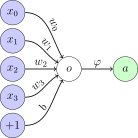

Introduction#
In this introduction chapter, we will present a first neural network called the Perceptron. This model is a neural network made of a single neuron, and we will use it here as a way to introduce key concepts that we will detail later in the course.
Show code cell content
%config InlineBackend.figure_format = 'svg'
%matplotlib inline
import matplotlib.pyplot as plt
import seaborn as sns
from notebook_utils import prepare_notebook_graphics
prepare_notebook_graphics()
A first model: the Perceptron#
In the neural network terminology, a neuron is a parametrized function that takes a vector \(\mathbf{x}\) as input and outputs a single value \(a\) as follows:
where the parameters of the neuron are its weights stored in \(\mathbf{w}\) and a bias term \(b\), and \(\varphi\) is an activation function that is chosen a priori (we will come back to it in more details later in the course):

A model made of a single neuron is called a Perceptron.
Optimization#
The models presented in this book are aimed at solving prediction problems, in which the goal is to find “good enough” parameter values for the model at stake given some observed data.
The problem of finding such parameter values is coined optimization and the deep learning field makes extensive use of a specific family of optimization strategies called gradient descent.
Gradient Descent#
To make one’s mind about gradient descent, let us assume we are given the following dataset about house prices:
import pandas as pd
boston = pd.read_csv("../data/boston.csv")[["RM", "PRICE"]]
boston
| RM | PRICE | |
|---|---|---|
| 0 | 6.575 | 24.0 |
| 1 | 6.421 | 21.6 |
| 2 | 7.185 | 34.7 |
| 3 | 6.998 | 33.4 |
| 4 | 7.147 | 36.2 |
| ... | ... | ... |
| 501 | 6.593 | 22.4 |
| 502 | 6.120 | 20.6 |
| 503 | 6.976 | 23.9 |
| 504 | 6.794 | 22.0 |
| 505 | 6.030 | 11.9 |
506 rows × 2 columns
In our case, we will try (for a start) to predict the target value of this
dataset, which is the median value of owner-occupied homes in $1000
"PRICE", as a function of the average number of rooms per dwelling "RM" :
sns.scatterplot(data=boston, x="RM", y="PRICE");
Let us assume we have a naive approach in which our prediction model is linear without intercept, that is, for a given input \(x_i\) the predicted output is computed as:
where \(w\) is the only parameter of our model.
Let us further assume that the quantity we aim at minimizing (our objective, also called loss) is:
where \(y_i\) is the ground truth value associated with the \(i\)-th sample in our dataset.
Let us have a look at this quantity as a function of \(w\):
import numpy as np
def loss(w, x, y):
w = np.array(w)
return np.sum(
(w[:, None] * x.to_numpy()[None, :] - y.to_numpy()[None, :]) ** 2,
axis=1
)
w = np.linspace(-2, 10, num=100)
x = boston["RM"]
y = boston["PRICE"]
plt.plot(w, loss(w, x, y), "r-");
Here, it seems that a value of \(w\) around 4 should be a good pick, but this method (generating lots of values for the parameter and computing the loss for each value) cannot scale to models that have lots of parameters, so we will try something else.
Let us suppose we have access, each time we pick a candidate value for \(w\), to both the loss \(\mathcal{L}\) and information about how \(\mathcal{L}\) varies, locally. We could, in this case, compute a new candidate value for \(w\) by moving from the previous candidate value in the direction of steepest descent. This is the basic idea behind the gradient descent algorithm that, from an initial candidate \(w_0\), iteratively computes new candidates as:
where \(\rho\) is a hyper-parameter (called the learning rate) that controls the size of the steps to be done, and \(\left. \frac{\partial \mathcal{L}}{\partial w} \right|_{w=w_t}\) is the gradient of \(\mathcal{L}\) with respect to \(w\), evaluated at \(w=w_t\). As you can see, the direction of steepest descent is the opposite of the direction pointed by the gradient (and this holds when dealing with vector parameters too).
This process is repeated until convergence, as illustrated in the following visualization:
rho = 1e-5
def grad_loss(w_t, x, y):
return np.sum(
2 * (w_t * x - y) * x
)
ww = np.linspace(-2, 10, num=100)
plt.plot(ww, loss(ww, x, y), "r-", alpha=.5);
w = [0.]
for t in range(10):
w_update = w[t] - rho * grad_loss(w[t], x, y)
w.append(w_update)
plt.plot(w, loss(w, x, y), "ko-")
plt.text(x=w[0]+.1, y=loss([w[0]], x, y), s="$w_{0}$")
plt.text(x=w[10]+.1, y=loss([w[10]], x, y), s="$w_{10}$");
What would we get if we used a smaller learning rate?
rho = 1e-6
ww = np.linspace(-2, 10, num=100)
plt.plot(ww, loss(ww, x, y), "r-", alpha=.5);
w = [0.]
for t in range(10):
w_update = w[t] - rho * grad_loss(w[t], x, y)
w.append(w_update)
plt.plot(w, loss(w, x, y), "ko-")
plt.text(x=w[0]+.1, y=loss([w[0]], x, y), s="$w_{0}$")
plt.text(x=w[10]+.1, y=loss([w[10]], x, y), s="$w_{10}$");
It would definitely take more time to converge. But, take care, a larger learning rate is not always a good idea:
rho = 5e-5
ww = np.linspace(-2, 10, num=100)
plt.plot(ww, loss(ww, x, y), "r-", alpha=.5);
w = [0.]
for t in range(10):
w_update = w[t] - rho * grad_loss(w[t], x, y)
w.append(w_update)
plt.plot(w, loss(w, x, y), "ko-")
plt.text(x=w[0]-1., y=loss([w[0]], x, y), s="$w_{0}$")
plt.text(x=w[10]-1., y=loss([w[10]], x, y), s="$w_{10}$");
See how we are slowly diverging because our steps are too large?
Wrap-up#
In this section, we have introduced:
a very simple model, called the Perceptron: this will be a building block for the more advanced models we will detail later in the course, such as:
the fact that a task comes with a loss function to be minimized (here, we have used the mean squared error (MSE) for our regression task), which will be discussed in a dedicated chapter;
the concept of gradient descent to optimize the chosen loss over a model’s single parameter, and this will be extended in our chapter on optimization.